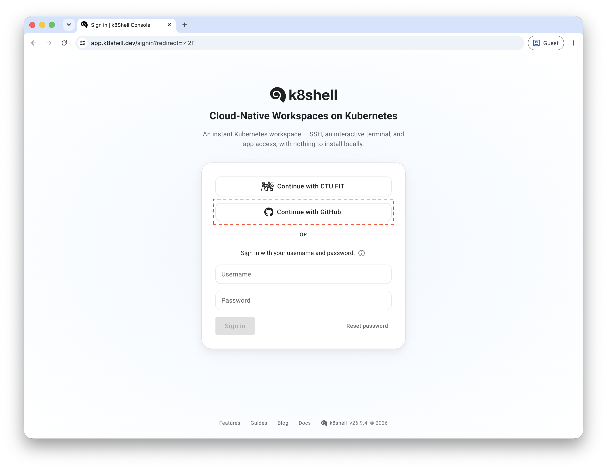

This is the platform used for the course labs.
k8shell is built on top of a Kubernetes cluster that dynamically provisions user workspaces based on specific requirements, including:
Find out more about k8shell:
Should you have any questions regarding k8shell, its use or have any issues, please talk to your instructor.
k8shell allows you to sign in using your existing GitHub account.
To access your workspace, open the k8shell sign-in page at https://app.k8shell.dev. You will see the following screen:

Sign in using the Continue with GitHub button, which authenticates you via your GitHub account. The username/password form is currently not available and should not be used.
After signing in, you will be redirected to the GitHub login page (if you are not already logged in) and then back to k8shell. The first time you sign in, GitHub will ask you to approve the k8shell application's access to your GitHub resources - you need to authorize this for the sign-in to complete.
You get access to workspace blueprints according to the courses you are subscribed to. For example, if you are subscribed to a course with a workspace blueprint called arc, you will have access to it.
To provision a workspace from a blueprint:
arc).The workspace will be created within a few seconds, and its progress will be shown in the table.
Once the workspace status is Running, open the workspace dashboard. From there you can:
To connect to a workspace from your computer, you need a public key registered in k8shell. If you signed in via GitHub and already had an SSH key uploaded there, that key is automatically transferred to k8shell for you to use, so you can connect right away provided you have the corresponding private key on your computer (in your .ssh directory).
Once your workspace is Running, you can connect to it using any SSH client, Visual Studio Code (with the Remote - SSH extension), or any SFTP client to copy files to and from your workspace, in addition to the browser-based Terminal tab in the workspace dashboard.
When connecting, you identify the workspace using <username>~<workspace> as the SSH username, where <username> is your username and <workspace> is the name of the workspace you created from a blueprint (by default the same as the blueprint name, e.g. arc).
When you are logged in to the workspace, you operate under your own username with your own UID and GID numbers. By default, you do not have privileged access in the workspace, however, depending on your course settings, you may have sudo privileges too. Using sudo you can install additional software, manage packages, and perform administrative tasks inside your workspace.
The SSH command to access your workspace is as follows:
ssh -i </path/to/key> <username>~<workspace>@app.k8shell.dev
where </path/to/key> is the path to your SSH private key stored on your computer (usually ~/.ssh/id_rsa), <username> is your username, and <workspace> is the name of the workspace you want to access.
For example, to access the workspace arc with the username john, and the private key ~/.ssh/id_rsa:
ssh -i ~/.ssh/id_rsa john~arc@app.k8shell.dev
k8shell v26.9.4
Last login: Mon Sep 16 14:43:30 2024 from 10.126.2.67
john@arc:~$
After you run the command, you will be logged in to the workspace. The prompt will show you the username and workspace you are currently using. You can now start using the workspace by running commands in the terminal. Note that you can use almost any ssh option with the ssh command, such as -L or -D for port forwarding, -A for agent forwarding etc.
You can also configure your SSH client to access your workspace without specifying the key and username each time. Add the following configuration to your ~/.ssh/config file:
Host k8shell
HostName app.k8shell.dev
PreferredAuthentications publickey
User <username>~<workspace>
Port 22
IdentityFile /path/to/key
ForwardAgent yes # if you want to forward your SSH agent
After adding the configuration, you can access the workspace using the following command:
ssh k8shell
You can also use this configuration to access another workspace by overriding the workspace name in the command:
ssh john~arc@k8shell
You can also use SSH port forwarding to access services running on the workspace from your local machine. For example, if you have a Web server running on the workspace listening on port tcp/80, you can forward the port to your local machine using the following command:
ssh -L 8080::80 john~arc@k8shell
After running the command, you can access the Web server running on the workspace by opening http://localhost:8080 in your browser.
If you need to access other services that require SSH authentication, you can use SSH agent forwarding. To enable SSH agent forwarding, you need to add the -A option to the SSH command:
ssh -A john~arc@k8shell
Note that this option can also be enabled in the SSH configuration by using ForwardAgent yes as described in the previous section. SSH agent forwarding allows you to use your local SSH keys to authenticate to other services from the workspace. The remote workspace does not store your SSH keys, but it forwards the authentication requests to your local machine.
You can also access the workspace using Visual Studio Code (VSCode). To do this, you can follow the official documentation on how to connect to a remote SSH server.
Below are simple steps to connect to your workspace:
Ctrl+Shift+P) and run the Remote-SSH: Connect to Host... command.k8shell from the list of hosts (assuming you have the SSH configuration from the previous section).Note that if you do not specify User in the SSH configuration, you will need to provide the username and workspace name in the User field in the VSCode connection dialog.
If you have the VSCode code CLI installed on your computer, you can also open VSCode directly from the terminal by running the following command:
code -n --folder-uri=vscode-remote://ssh-remote+john~arc@k8shell/home/john/workspace
When you connect to the workspace using VSCode, it will first install the VSCode server on the workspace, and then it will connect to the server using the SSH protocol's port forwarding. You use VSCode like you would use it on your local machine. When you develop an application in VSCode and run it in debug mode, the application will run on the workspace, but you can debug it from your local machine. VSCode will automatically forward the port your application is listening on to your local machine so you can access it from your browser.
For development of your projects, you can use Git to manage your source code. Access to Git repositories is over HTTPS, using a token provisioned for you automatically.
Once you have onboarded via GitHub, your workspace is preconfigured with a Git credential helper that authenticates against GitHub using this provisioned token, so you can clone, push, and pull repositories without entering any credentials:
git clone https://github.com/<repo>.git
The token itself is not stored in your workspace - it is kept in the k8shell backend, and the credential helper retrieves it on demand whenever Git needs to authenticate.
You can manage the provisioned token from the console by opening Credentials in the user menu in the sidebar. From there you can:
The workspace will be available for you to use until the end of the semester. Every workspace has two persistent volumes attached to it: your home directory mounted at /home/<username> and a shared directory mounted at /opt/shared. There is a symbolic link created in your home directory to the shared folder. You have read/write access to your home directory where you can store all files. The size of your home directory volume is set to 10GB by default and can be dynamically adjusted should you have a requirement to store more data. Please contact your lab tutor to ask for more space. Note that your home directory is also used to store various configuration files of software you use as well as is the place where vscode and intellij remote servers store their binaries. The shared folder is used by your tutor to distribute files to students and students do not have write permissions in it.
The workspace is ephemeral which means that when the workspace is stopped or terminated, any data stored in the workspace outside of the persistent volumes will be lost (such as when you install a new package or software) - see Workspace Management below for the difference between the two. Although the workspace should not be stopped during the semester, it is recommended to create an installation script in case you are installing any software so that you can repeat the installation process if the workspace is recreated.
Each workspace has a limited amount of CPU and memory available. This limit is defined by your course and it should be sufficient to complete your course tasks. If you think that you need more resources, please contact your lab tutor.
Once created from a blueprint, the workspace will be running for the whole semester, and you can access it anytime you need using the workspace dashboard, SSH, or VSCode as described above.
You can stop or terminate your workspace either from the console or from the terminal:
shutdown in the terminal, or press the corresponding button in the workspace dashboard. Your home directory is preserved and will be re-attached the next time you start the workspace. Any software or changes made outside your home directory, however, will be lost.shutdown --delete in the terminal, or press the corresponding button in the workspace dashboard. This also deletes your home directory, so make sure to push or back up any work you want to keep before terminating.When you access a stopped workspace again (via the dashboard, SSH, or VSCode), it will be automatically started for you.